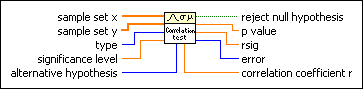
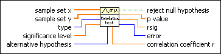

Correlation Test VI
Owning Palette: Hypothesis Testing VIs
Requires: Full Development System
Tests hypotheses about the association between two variables x and y.

 Add to the block diagram Add to the block diagram |
 Find on the palette Find on the palette |
Owning Palette: Hypothesis Testing VIs
Requires: Full Development System
Tests hypotheses about the association between two variables x and y.

| Add to the block diagram |
Find on the palette |
 |
sample set x contains the sampled data from the first variable x. | ||||||
|
sample set y contains the sampled data from the second variable y. | ||||||
 |
type specifies the type of correlation test to perform.
|
||||||
 |
significance level specifies the probability that the hypothesis test conclusion is wrong based on the sample set x and sample set y. | ||||||
 |
alternative hypothesis specifies the hypothesis to accept if LabVIEW rejects the null hypothesis that the variables x and y are uncorrelated.
|
||||||
 |
reject null hypothesis indicates whether to reject the null hypothesis, with significance level being the probability of reaching the wrong conclusion. If p value is less than or equal to significance level, reject null hypothesis returns TRUE. Reject the null hypothesis and accept the alternative hypothesis. If p value is greater than significance level, reject null hypothesis returns FALSE. Accept the null hypothesis and reject the alternative hypothesis. |
||||||
 |
p value returns the probability that you incorrectly rejected the null hypothesis. | ||||||
|
rsig returns the minimum value of the correlation coefficient for which you should reject the null hypothesis. | ||||||
 |
error returns any error or warning from the VI. You can wire error to the Error Cluster From Error Code VI to convert the error code or warning into an error cluster. | ||||||
|
correlation coefficient r returns the linear correlation coefficient between x and y. |